14
14.1 Le tau de Kendall
14.1.1 Formule mathématique
Une alternative au \(\rho\) de Spearman et le \(\tau\) de Kendall. Le principe du \(\tau\) de Kendall est de calculer les inversions dans l’ordre des observations.
Reprenons l’exemple sur le lien entre la taille et le poids (Voir Tableau 7). Dans ce tableau, les valeurs du poids sont ordonnées par ordre croissant. Si l’ordre est parfaitement respecté, toutes les valeurs de taille devrait être ordonnées par ordre croissant. A l’inverse, si on a une corrélation négative, toutes les valeurs devraient être en ordre décroissant. Enfin, s’il n’y a pas de lien, l’ordre des observations devrait être respecté un peu près autant de fois qu’il ne l’est pas. L’idée est donc de faire la somme de ces inversions et de diviser par le nombre total d’inversions possibles.
\[\tau = \frac {\sum inversions}{\frac {1}{2} \times n \times (n-1)}\]
Les inversions est la somme des paires d’observations concordantes et discordantes. Les paires d’observations \((x_{i},y_{i})\) sont dites concordantes si \(x_i < x_j\) et \(y_i < y_j\) ou si \(x_i\) >\(x_j\) et \(y_i\) > \(y_j\). Elles sont dites discordantes si \(x_i\) < \(x_j\) et \(y_i\) > \(y_j\) ou si \(x_i\) > \(x_j\) et \(y_i\) < \(y_j\).
14.1.2 Décomposition du calcul
Reprenons l’exemple sur la taille présentées dans le Tableau 7. Les poids sont ordonnés par ordre croissant, de 1 à 7. On va comptabiliser pour la variable taille, le nombre de fois qu’il va y avoir une inversion dans les observations qui lui succèdent. Par exemple, on constate que le premier individu (poids = 65, taille = 185) a 3 autres personnes qui ont une taille plus grand (l’individu 3 avec une taille de 192, l’individu 6 avec une taille de 190 et l’individu 7 avec une taille de 200) et 3 individus ont une taille inférieure à lui (individu 2 avec une taille de 180, l’individu 4 avec une taille de 182 et le 5 avec une taille de 163). Pour l’individu 2, il y a 4 personnes qui ont une taille plus grande après lui et une qui a une taille plus petite que lui. Le code ci-dessous permet d’obtenir ces valeurs :
Il ne reste plus qu’à appliquer la formule pour le \(\tau\) :
## [1] 0.2380952On peut calculer la probabilité associée au \(\tau\) de Kendall en utilisant la loi normale. En effet, la variance du \(\tau\) de Kendall peut être obtenu par la formule suivante :
\[V_\tau=\frac{2 \times (2 \times n + 5)}{9 \times n \times (n-1)}\]
## [1] 0.1005291On peut obtenir la significativité de la valeur de la corrélation comme pour la corrélation de Bravais-Pearson en calculant le t par la formule :
\[t=\frac {r \times \sqrt{(n-2)}}{\sqrt{1-r^2}}\]
## [1] 0.5481613
2*(1-pt(t,5)) ## [1] 0.6071559On obtient cette valeur en utilisant la fonction corr.test avec “Kendall” spécifié à l’argument “method”
r.out<-corr.test(taille$poids.kg.,taille$Taille.cm., method="kendall")
r.out## Call:corr.test(x = taille$poids.kg., y = taille$Taille.cm., method = "kendall")
## Correlation matrix
## [1] 0.24
## Sample Size
## [1] 7
## These are the unadjusted probability values.
## The probability values adjusted for multiple tests are in the p.adj object.
## [1] 0.61
##
## To see confidence intervals of the correlations, print with the short=FALSE option14.2 Description de l’exemple de travail
Des chercheurs se sont demandés s’il existait un lien entre le nombre de colonies d’abeilles productrices de miel dans une région et le nombre d’arrestations pour possession de marijuana. (Cet exemple s’inspire des données présentées ici : http://tylervigen.com/view_correlation?id=1582). Vous trouverez les données en pièces attachées ci-dessous.
{{% attachments style="grey" %}}14.3 Importer les données
Les données, disponibles dans le fichier miel2.txt, sont présentées dans le Tableau 1.
note : il n’est pas nécessaire pour l’utilisateur d’utiliser la fonction datable qui est utilisée ici afin de rendre les données le plus lisible possible.
14.5 Décrire les données
Dans le cadre de cet exercice, nous continuerons avec le jeu de données ‘miel2’ où il y a 2 valeurs influentes.
La première étape pour réaliser une corrélation est de décrire les données. Décrire les données, c’est avoir évidemment les statistiques descriptives, mais c’est aussi identifier si des valeurs sont influentes. Le parti pris en l’occurrence est de décider de supprimer les observations influentes car on n’est pas dans la possibilité de savoir si ces observations sont légitimes ou non. Il faut constater que cette décision est prise avant même de réaliser l’analyse.
On peut obtenir les statistiques descriptives grâce à la fonction describe du package ‘psych’.
library(psych)
describe(miel[,c("Miel", "Arrestations")]) ## préciser les variables n'est pas obligatoire ici mais est présenté à titre indicatif pour les situations où on ne veut pas l'analyse de toutes les variables## miel[, c("Miel", "Arrestations")]
##
## 2 Variables 202 Observations
## --------------------------------------------------------------------------------
## Miel
## n missing distinct Info Mean pMedian Gmd .05
## 202 0 176 1 2714 2640 378.1 2335
## .10 .25 .50 .75 .90 .95
## 2390 2503 2608 2801 3211 3258
##
## lowest : 1200 2304 2316 2323 2325, highest: 3320 3322 3344 3388 10000
## --------------------------------------------------------------------------------
## Arrestations
## n missing distinct Info Mean pMedian Gmd .05
## 202 0 199 1 76383 87608 25919 17079
## .10 .25 .50 .75 .90 .95
## 22330 69544 90018 92758 95545 96814
##
## lowest : 3500 16281 16440 16486 16490, highest: 97831 97887 98311 98751 100000
## --------------------------------------------------------------------------------Pour identifier la présence de valeurs influentes, il est nécessaire de passer par le modèle linéaire et de récupérer les résidus. Ensuite, on réalisera le test de Grubbs. Ce test est disponible dans le package ‘outliers’, avec la fonction grubbs.test.
library(outliers)
lm.out<-lm(Miel~Arrestations, data=miel)
miel$res<-residuals(lm.out)
grubbs.test(miel$res, type = 10, opposite = FALSE, two.sided = FALSE)##
## Grubbs test for one outlier
##
## data: miel$res
## G.202 = 13.30141, U = 0.11538, p-value < 2.2e-16
## alternative hypothesis: highest value 7453.23397513205 is an outlierDans ce cas, nous avons au moins une valeur influente. Nous allons opter pour la suppression de l’ensemble des valeurs influentes. Ainsi, tant que la probabilité du test de Grubbs sera inférieure à 0.05, on voudra supprimer les observations influentes. Il est important d’identifier ces valeurs influentes pour comprendre pourquoi elles sont considérées comme influentes.
Pour atteindre cet objectif, il va falloir faire une boucle while. Cette boucle fonctionne sur le principe suivant : tant qu’un critère est respecté, fais l’opération ; dès que le critère n’est plus respecté, arrête l’opération. Dans notre cas, voici comme nous allons opérer :
miel3<-miel ## on commence par créer un nouvel objet pour garder notre jeu de données initial
outliers.value<-data.frame() ## on crée un dataframe vide pour stocker les valeurs influentes
p<-grubbs.test(miel3$res, type = 10, opposite = FALSE,
two.sided = FALSE)$p.value ## on extrait la probabilité pour le test de Grubbs
while(p<0.05){ ## on indique qu'il faudra répéter l'opération tant que la probabilité est inférieure à 0.05.
## on commence par identifier l'observation, en valeur absolue qui a le résidu le plus élevé :
max.res<-which.max(abs(miel3$res))
## on ajouter cette observation au dataframe outliers.value
outliers.value<-rbind(outliers.value,miel3[max.res,] )
## on supprime l'observation avec le résidu maximum en valeur absolue
miel3<-miel3[-max.res,]
## on refait le test de grubbs pour mettre à jour la probabilité (sinon la boucle serait infinie)
p<-grubbs.test(miel3$res, type = 10, opposite = FALSE,
two.sided = FALSE)$p.value
}
## on identifie qu'il y a 2 valeurs influentes
outliers.value| Miel | Arrestations | res |
|---|---|---|
| 1e+04 | 1e+05 | 7.45e+03 |
| 1.2e+03 | 3.5e+03 | -2.03e+03 |
Ainsi, deux valeurs influentes représentent moins d’un pourcent des observations de notre jeu de données initial.
## [1] 0.990099Il est acceptable de supprimer 1% des observations si elles sont influentes. Je n’ai pas connaissance de règles claires sur le pourcentage d’observation qu’il est acceptable de supprimer. Néanmoins, on peut estimer que, s’il faut supprimer plus de 5% des observations, il peut être nécessaire de s’intéresser à la distribution des données.
Nous pouvons à présent refaire les analyses descriptives sur le nouveau jeu de données. Identifiez comme la moyenne et l’écart-type ont été modifiés pour les deux variables suite à la suppression des deux observations.
## miel3[, c("Miel", "Arrestations")]
##
## 2 Variables 200 Observations
## --------------------------------------------------------------------------------
## Miel
## n missing distinct Info Mean pMedian Gmd .05
## 200 0 174 1 2685 2640 296.9 2341
## .10 .25 .50 .75 .90 .95
## 2394 2504 2608 2789 3210 3253
##
## lowest : 2304 2316 2323 2325 2329, highest: 3318 3320 3322 3344 3388
## --------------------------------------------------------------------------------
## Arrestations
## n missing distinct Info Mean pMedian Gmd .05
## 200 0 197 1 76630 87669 25466 20737
## .10 .25 .50 .75 .90 .95
## 24707 77549 90018 92747 95428 96678
##
## lowest : 16281 16440 16486 16490 16517, highest: 97671 97831 97887 98311 98751
## --------------------------------------------------------------------------------14.6 Vérifier les conditions d’application
La seconde étape consiste à vérifier la normalité. Il existe plusieurs manière pour tester la normalité. Nous allons en présenter deux visuelles et une en utilisant le test de Shaprio-Wilk. Le test de Shapiro-Wilk doit être privilégié. Pour le test de Shapiro-Wilk, on utilise la fonction shapiro.test.
shapiro.test(miel3$res)##
## Shapiro-Wilk normality test
##
## data: miel3$res
## W = 0.98927, p-value = 0.1396En l’occurrence, la probabilité associé au test de Shapiro-Wilk est de 0.19. On peut donc tolérer l’hypothèse d’absence nulle de différence entre la distribution des données et la distribution normale.
On peut également vérifier si la distribution des résidus suit une distribution théorique visuellement en faisant une représentation graphique des résidus sous la forme d’un histogramme. On peut réaliser cela à l’aide la fonction ggplot et en utilisant un ‘geom’ geom_histogram
require(ggplot2)
p1<-ggplot(miel3, aes(x=res))
## on fait le graphique sur la variable 'res' en axe des x contenue dans le jeu de données 'miel3'
p1<-p1+geom_histogram(aes(y=..density..))
## on fait les histogrammes sur les résidus. On calcule la densité
p1<-p1+ stat_function(fun = dnorm, colour = "red",
## on ajoute une distribution normale théorique en rouge
## avec moyenne la moyenne des résidus - on aurait pu mettre 0
args = list(mean = mean(miel3$res, na.rm = TRUE),
## et l'écart-type l'écart-type des résidus
sd = sd(miel3$res, na.rm = TRUE)))
p1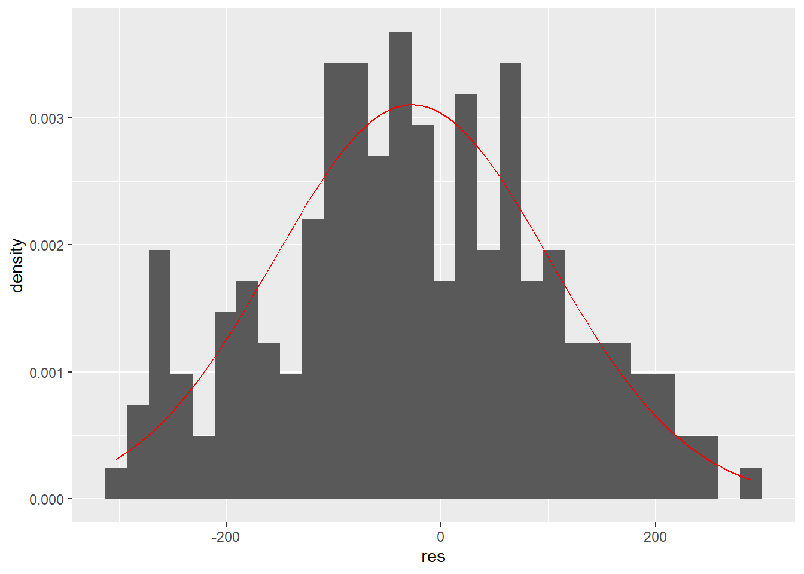
Figure 1. Distribution des résidus pour les données de Miel.
Si la distribution ne suit pas parfaitement la distribution normale, il ne semble pas d’y avoir de forte asymétrie, ni de fort aplatissement. En effet, la densité est plus élevé au centre de la courbe qu’aux extrémités.
On réaliser un QQ plot. Celui-ci est représenté en Figure 2. Si les points suivent une droite, alors les données suivent une distribution normale. Dans notre exemple, on aurait plutôt tendance à conidérer que la distribution n’est pas tout à fait normale au regard de l’angle assez marquer qu’on observe sur le base de la courbe.
## on fait un graphique sur les données contenues dans le data.frame miel3, et on échatillonne "res"
p<-ggplot(miel3, aes(sample=res))
## on indique que la forme du graphique qu'on veut est un QQ plot.
p<-p+stat_qq()
## on rajoute un titre qui a un titre de taille 12
p<-p+theme(plot.title = element_text(size = 12))+ggtitle("QQplot de la distribution des résidus pour les données Miel")
p 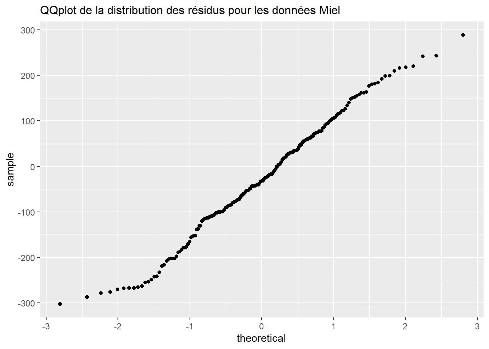
Figure 2. QQ plot pour les données de miel.
La troisième étape consiste à vérifier si les variances sont plutôt homogènes. La solution la plus simple est de créer le nuage de points et d’observer la distribution des observations. Une alternative est d’utiliser le test de Breusch-Pagan qui est disponible dans le package ‘olsrr’ avec la fonction ols_test_breusch_pagan. Dans ce second cas, il est nécessaire de réaliser le modèle linéaire au préalable.
Nous commencerons par utiliser le test de Breusch-Pagan. La logique de fonctionnement de ce test est plutôt simple : on réaliser un modèle linéaire et le résultat du modèle linéaire est utiliser directement dans la fonction. Nous avons déjà réalisé notre modèle linéaire, nous pouvons donc utiliser l’objet ‘lm.out’ créé précédemment. Les autres options de cette fonctions seront décrites dans le chapitre consacré aux régressions.
library(olsrr)
lm.out<-lm(Miel~Arrestations, data=miel3)
ols_test_breusch_pagan(lm.out)##
## Breusch Pagan Test for Heteroskedasticity
## -----------------------------------------
## Ho: the variance is constant
## Ha: the variance is not constant
##
## Data
## --------------------------------
## Response : Miel
## Variables: fitted values of Miel
##
## Test Summary
## -----------------------------
## DF = 1
## Chi2 = 2.72071
## Prob > Chi2 = 0.09905396La probabilité associée au test de Breusch-Pagan est très inférieure à 0.05, ce qui nous amène à rejeter l’hypothèse nulle des variances homogènes.
L’alternative est de réaliser le nuage de points. Nous utiliserons le package ‘ggplot2’ pour réaliser ce nuage de points. L’intérêt du package ‘ggplot2’ est qu’on peut stocker des versions intermédiaires du graphique et le customiser progressivement pour atteindre la version finale.
14.7 Faire le graphique
Pour faire une représentation graphique d’une corrélation, on fait généralement un nuage de points. On obtient aisément un nuage de points à l’aide de la fonction geom_point du package “ggplot2”.
Dans le code ci-dessous, la fonction ggplot permet de faire la représentation graphique. Ainsi, il faut préciser le jeu de données sur lequel le graphique doit être réalisé, la variable sur l’axe des ordonnées (y) et la variable sur l’axe des abcisses (x). On ajoute ensuite à ce graphique son esthétique. Dans notre cas, on veut réaliser un nuage de points.
p<-ggplot(data=miel3, aes( x=Miel, y=Arrestations))+geom_point()
p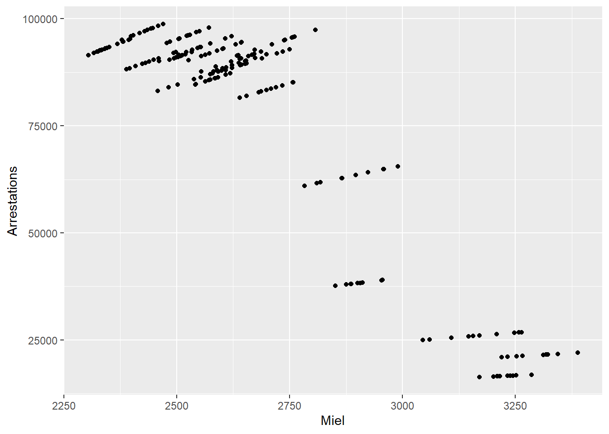
Figure 3. Nuage de points représentant la corrélation entre le nombre de colonies d’abeilles productrices de miel et le nombre d’arrestations pour possession de marujuana.
Dans la Figure 3, il n’est pas simple d’identifier la valeur de la corrélation simplement à partir du nuage de points. Les choses seraient facilitées si on ajoutait la droite de régression.
Pour ajouter la droite de régression, on utilise la fonction geom_smooth où on va préciser que nous voulons identifier la meilleure relation linéaire (lm = linear model). Nous pouvons donc ajouter à notre graphique cet élément.
p<-p+geom_smooth(method="lm")Par ailleurs, nous voudrions pouvoir préciser le nom des variables sur les axes. Ceci est possible grâce aux fonctions xlab et ylab.
p<-p+xlab("Nombre de colonies d'abeilles productrices de miel")+ylab("Nombre d'arrestations pour possession de marijuana")Nous pouvons à présent afficher le graphique.
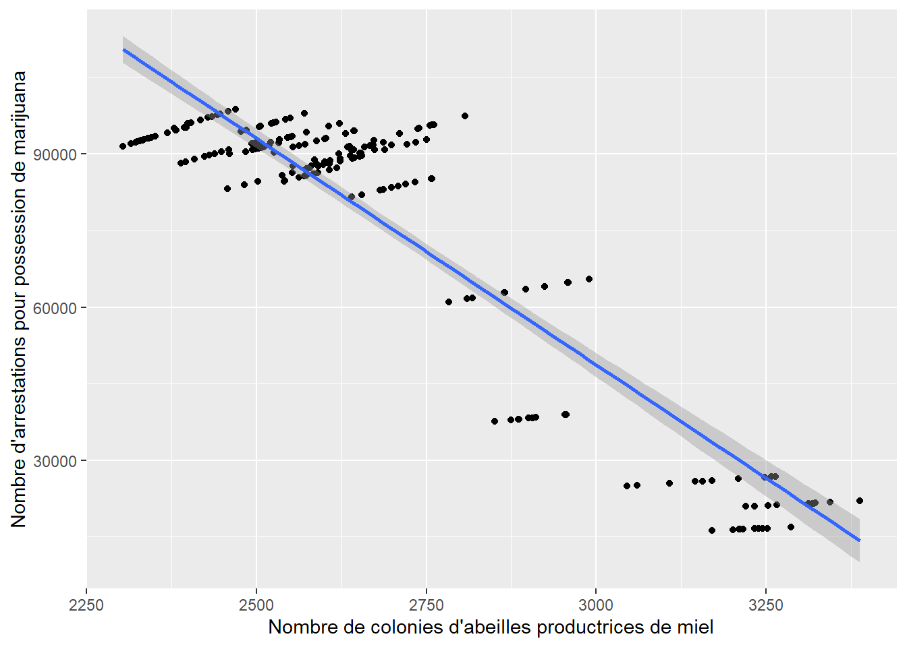
Figure 4. Nuage de points représentant la corrélation entre le nombre de colonies d’abeilles productrices de miel et le nombre d’arrestations pour possession de marujuana customisé.
Il existe plusieurs thèmes intégrés à ‘ggplot2’ qui permettent de personnaliser rapidement le graphique. En voici quelques exemples, qui ne sont que des adaptations de la Figure 4.
p+theme_gray() + ggtitle("theme_gray")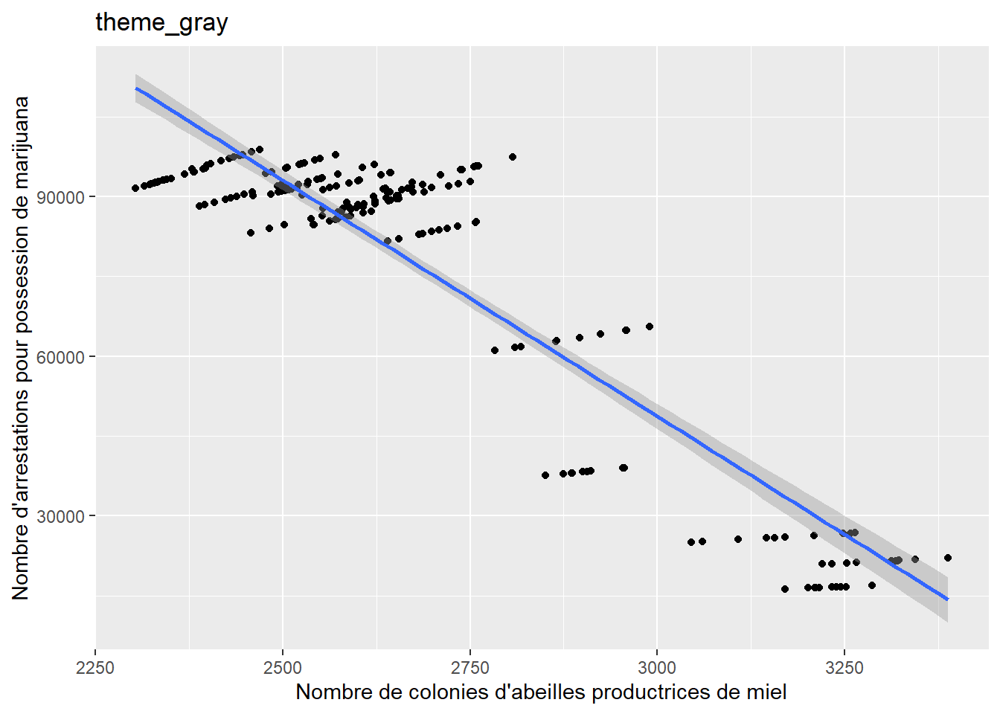
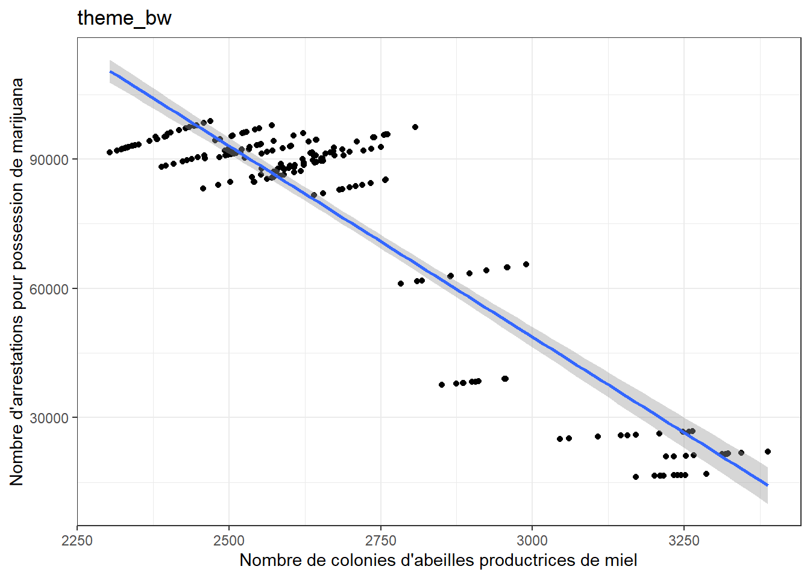
p+theme_linedraw()+ ggtitle("linedraw")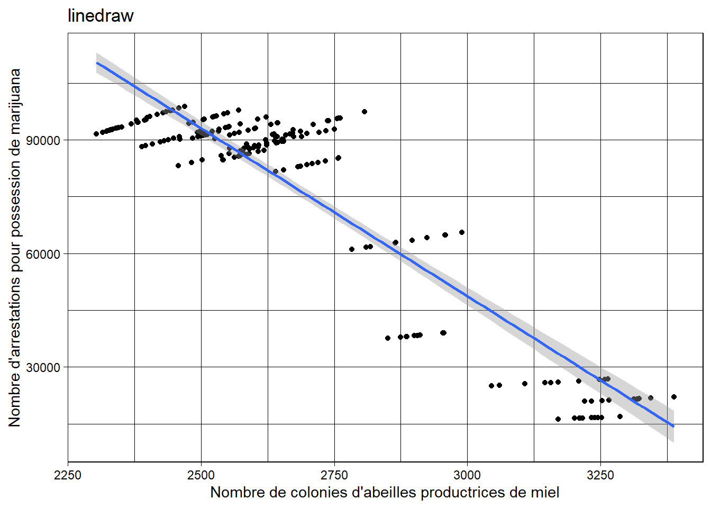
p+theme_light()+ ggtitle("theme_light")
p+theme_dark()+ ggtitle("theme_dark")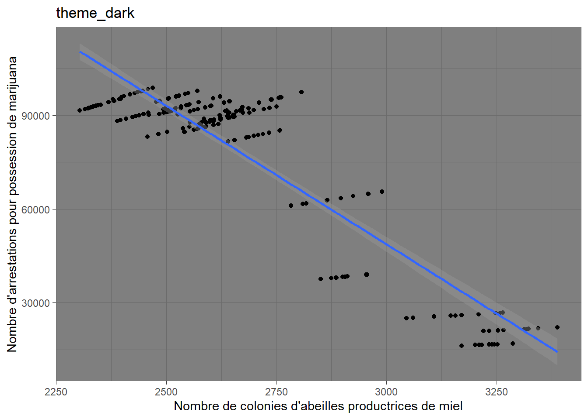
p+theme_minimal()+ ggtitle("theme_minimal")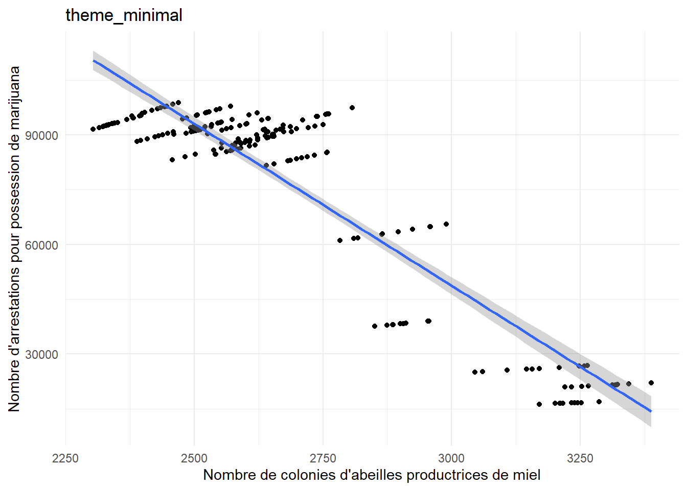
p+theme_classic()+ ggtitle("theme_classic")
p+theme_void()+ ggtitle("theme_void")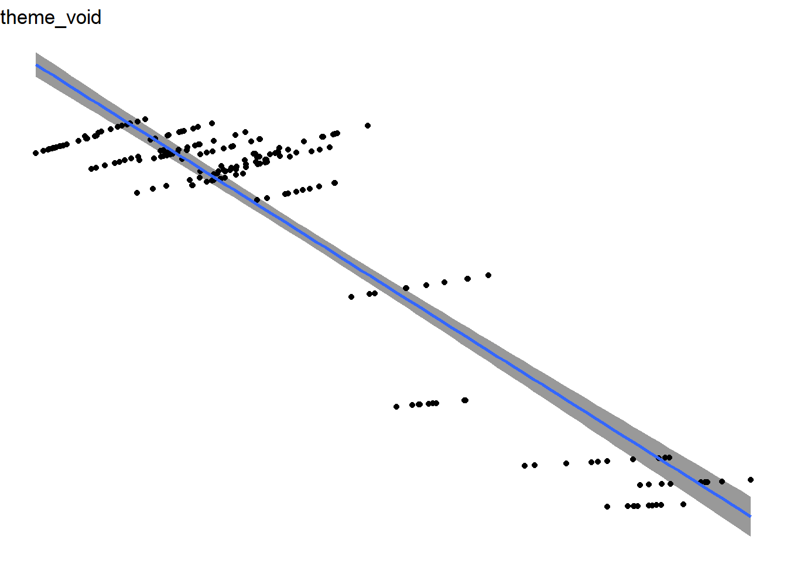
p+theme_test()+ ggtitle("theme_test")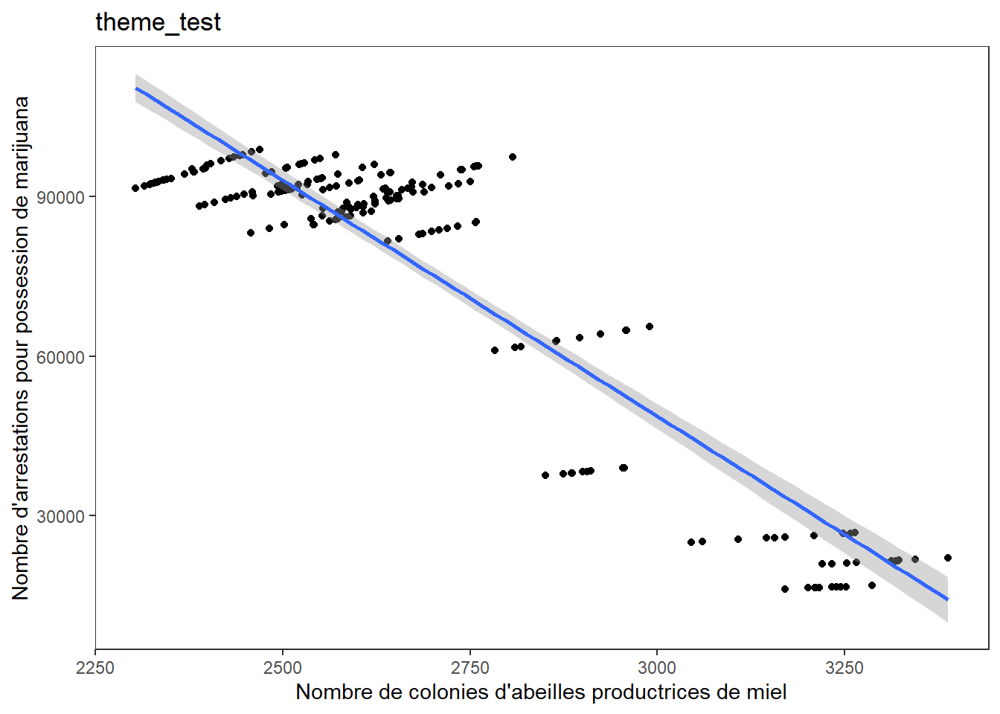
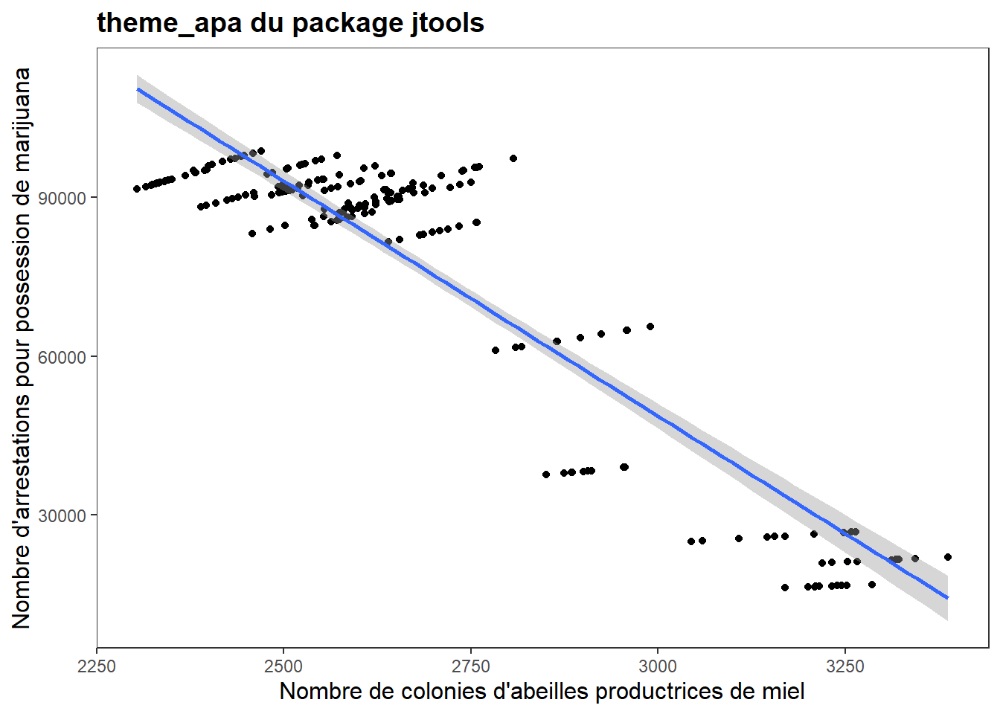
A présent que nous avons notre nuage de points, nous pouvons également vérifier les conditions d’application. Il n’est pas évident d’identier si les points sont plus denses autour de la droite de régression qsur les extrémités mais cela semble tout de même être le cas.
En ce qui concerne l’homogénéité des variance, on peut identifier si les variances sont homogènes ou hétérogènes autour de la droite de régression pour toutes les valeurs de X de la manière suivante : on observe si l’écart à la droite de régression est constante. Dans la Figure 5, on peut constater que la variance pour la droite rouge est considérablement plus petite que la variance sur la droite verte, ce qui amène donc à la même conclusion que la conclusion du test de Breusch-Pagan.
require(plotly)
p<-p+geom_segment(x=2500, y=85000, xend=2500, yend=95000, colour ="red", size=1)
p<-p+geom_segment(x=2955, y=38000, xend=2955, yend=65000, colour ="green", size=1)
ggplotly(p)Figure 5. Estimation de l’homogénéité des variances sur la base du graphique.
14.8 Réaliser la corrélation de Bravais-Pearson
Sur la base de la Figure 4, nous pouvons considérer qu’il existe une corrélation négative entre le nombre de colonies d’abeilles productrice du miel et le nombre de jeunes arrêtés pour possession de marijuana aux Etats-Unis. Néanmoins, nous n’avons pas encore estimé l’amplitude de cette corrélation. La fonction corr.test du package ‘psych’ permet d’estimer l’amplitude de la corrélation. Cette fonction est préférée à la fonction native de R car elle fournit la valeur de la probabilité, le nombre d’observations et permet d’obtenir l’intervalle de confiance grâce à la fonction print si on ajoute l’argument short=FALSE
corr.out<-corr.test(miel3$Miel, miel3$Arrestations, method= "pearson")
## pearson est la valeur par défaut, il n'est pas indispensable de la spécifier
print(corr.out, short=F)## Call:corr.test(x = miel3$Miel, y = miel3$Arrestations, method = "pearson")
## Correlation matrix
## [1] -0.91
## Sample Size
## [1] 200
## These are the unadjusted probability values.
## The probability values adjusted for multiple tests are in the p.adj object.
## [1] 0
##
## Confidence intervals based upon normal theory. To get bootstrapped values, try cor.ci
## raw.lower raw.r raw.upper raw.p lower.adj upper.adj
## NA-NA -0.93 -0.91 -0.88 0 -0.93 -0.88Cette analyse révèle la présence de corrélation de -0.91, associée à une probabilité inférieure à 0.001. L’intervalle de confiance fixe les limites de la corrélation entre -0.88 et -0.93. Cet intervalle de confiance s’appuie sur une distribution normale. Ainsi, l’intervalle de confiance signifie que, avec 95% de chance, la valeur de la corrélation dans la population se situe entre -0.88 et -0.93. Une information supplémentaire qu’on peut tirer de cette analyse est que, comme le zéro n’est pas recouvert, la corrélation dans la population n’est probablement pas égale à 0.
Ainsi, on peut conclure qu’il existe un lien significatif entre le nombre de colonies d’abeilles productrices de miel et le nombre d’arrestations pour possession de marijuana. En résumé, pour l’avenir de vos enfants, vous avez le choix : le diabète ou la consommation de drogue.
14.10 Procédure
Etant donné que les conditons d’application ne sont pas respectées, il pourrait être utile d’estimer l’intervalle de confiance en utilisant une approche plus robuste à savoir le bootstrap. On peut aisément obtenir ces information en utilisant la fonction cor.ci du package ‘psych’.
## Call:corCi(x = x, keys = keys, n.iter = n.iter, p = p, overlap = overlap,
## poly = poly, method = method, plot = plot, minlength = minlength,
## n = n)
##
## Coefficients and bootstrapped confidence intervals
## Miel Arrst
## Miel 1.00
## Arrestations -0.91 1.00
##
## scale correlations and bootstrapped confidence intervals
## lower.emp lower.norm estimate upper.norm upper.emp p
## Miel-Arrst -0.93 -0.93 -0.91 -0.88 -0.88 0Comme la méthode utilisée pour l’intervalle de confiance est la méthode des percentiles et que la méthode la plus robuste est la méthode avec correction pour asymétrie, on peut également obtenir le boostrap en utilisant la fonction boot.
library(boot)
## on commence par créer une fonction où il faut des données et les itérations.
corfun <- function(data, i){
d <- data[i,] ## on stocke une itération donnée dans l'objet d
r<-corr.test(d[,1], d[,2])$r ## on extrait juste la valeur de la corrélation sans autre valeur
return(r) ## on renvoie la valeur de la corrélation
}
boot.out<-boot(miel3[,1:2], statistic = corfun, R=1000)
bci<-boot.ci(boot.out)
bci## BOOTSTRAP CONFIDENCE INTERVAL CALCULATIONS
## Based on 1000 bootstrap replicates
##
## CALL :
## boot.ci(boot.out = boot.out)
##
## Intervals :
## Level Normal Basic
## 95% (-0.9373, -0.8863 ) (-0.9410, -0.8894 )
##
## Level Percentile BCa
## 95% (-0.9321, -0.8805 ) (-0.9319, -0.8803 )
## Calculations and Intervals on Original ScaleDans notre exemple, l’intervalle de confiance BCa se situe donc entre -0.932 et -0.88, ce qui est cohérent avec les résultats que nous avons obtenu précédemment : la vraie corrélation se situe à 95% de chances dans l’intervalle situé entre -0.932 et -0.88 et comme ces limites ne recouvrent pas le 0, il est improbable que la vraie corrélation soit égale à 0.
Dans de nombreuses situations, l’hypothèse faite sur la distribution des données est que la distribution suit une distribution normale. Cependant, cette condition est loin d’être systématiquement respectée. Une manière de contourner ce problème pour estimer un paramètre de la manière la plus optimale possible est de réaliser un bootstrap.
Cette technique généraliste consiste à échantillonner dans un échantillon un grand nombre de fois. L’échantillon créé par bootstrap est de taille identique à la taille initiale de l’échantillon. Les échantillons sont néanmoins différents à chaque itération car l’échantillonnage est réalisé avec remise. Ainsi, l’échantillon est composé de Pierre, Paul, Jacques. Comme il y a remise, Pierre peut donc être tiré plusieurs fois et votre premier échantillon de bootstrap pourrait être Pierre, Pierre, Paul. Evidemment, pour que le bootstrap ait du sens, il faut que la taille de l’échantillon soit suffisamment importante pour que le même échantillon ne revienne pas dans la répétition de l’opération.
L’intérêt de réaliser un boostrap est qu’on se dégage de la distribution des données puisqu’on va créer notre intervalle de confiance par simulation. Donc, peu importe la distribution initiale des données, le bootstrap s’y adapatera puisque la simulation de la distribution se basera sur la forme spécifique de la distribution des données de notre échantillon.
Dans une de nos études, nous n’avons pas très bien compris l’expérience de Milgram sur la soumission à l’autorité. Dans l’étude originale de Milgram, les participants doivent soumettre des chocs électriques à un autre participant chaque fois qu’il commet une erreur à une question. Ces chocs deviennent de plus en plus immportant au fur et à mesure que le nombre d’erreurs augmente. A l’insu des participants, la personne qui reçoit les chocs est un comparse de l’expérimentateur qui joue la comédie car elle ne reçoit pas vraiment des chocs.
Dans notre étude, nous n’avions pas vraiment compris que c’était un comparse, alors nous avons administré à nos participants des chocs électriques pour qu’ils apprennent à jouer aux fléchettes (pour ceux/celles qui auraient le moindre doute sur la question, et qui voudraient me signaler aux comités d’éthique ou aux CPP, nous tenons à leur préciser que cette étude est un fake … notre laboratoire ne dispose pas de dispositif pour administrer des chocs électriques). Nous avons voulu savoir si les personnes soumises à un choc électrique envoyaient leurs fléchettes plus près du centre de la cible. On sait que la distance habituelle du centre de la cible est de 34 mm dans notre cas. Nous avons donc réalisé cette étude auprès de 50 personnes. Voici les données :
## [1] 27 48 49 34 46 24 49 31 39 24 52 51 34 41 35 49 41 30 49 43 61 53 51 36 43
## [26] 23 48 34 52 49 47 43 21 58 39 36 27 29 34 48 58 54 38 30 40 29 46 37 26 37Pour déterminer si le groupe soumis à un choc électrique est plus proche du centre de la cible, il faut réaliser un t de Student comparaison à une norme.
mean(fleche)## [1] 40.46
(mean(fleche)-34)/(sd(fleche)/50^0.5)->t.value ## le 34 mm est la norme connue dans la population
t.value## [1] 4.449434Dans le bootstrap, on va tirer au hasard avec remise un nombre d’observations de notre échantillon qui correspond à la taille de l’échantillon. Pour faire un tirage au sort, on utilise la fonction sample. On indique dans cette fonction la taille d’échantillon qu’on veut échantillonner et l’argument ‘replace’ permet de préciser si c’est un tirage avec remise ou non. L’argument ‘T’ (pour TRUE) indique que c’est avec remise.
Comme notre échantillon fait 50 personnes, il faut que chaque échantillon du boostrap soit composé de 50 personnes.
sample(fleche,50,replace = T)## [1] 52 41 46 21 36 43 30 40 23 43 38 34 54 49 39 51 46 37 30 27 39 46 34 27 27
## [26] 52 27 49 49 47 49 35 34 58 27 41 36 36 34 53 38 51 34 31 21 43 30 39 29 46Sur ce nouvel échantillon, on peut donc calculer un nouveau t de Student comparaison à une norme qui va avoir une valeur différente de l’échantillon initial.
## [1] 3.583504Le principe du bootstrap est de répéter cette opération un grand nombre de fois (par exemple 1000, et au minimum 500) pour créer l’intervalle de confiance sur un paramètre ou une statistique. La boucle for permet de réaliser cette opération. On va créer un vecteur avec 1000 t de Student comparaison à une norme basé sur des échantillonnage avec remise. Notez qu’on peut également faire le bootstrap sur la moyenne pour connaître l’intervalle à l’intérieur duquel la vraie moyenne à 95% de chance d’être.
for(i in 1:999){
f2<-sample(fleche,50,replace = T)
t3<-(mean(f2)-34)/(sd(f2)/50^0.5)
t2<-c(t2, t3)
}A présent, l’objet t2 dans la mémoire de R est composé de 1000 valeurs, qui correspondent chacune à un t de Student comparaison à une norme qu’on a obtenues par échantillonnage avec remise.
Nous pouvons obtenir l’intervalle de confiance sur ces t de Student. Il existe plusieurs méthodes pour obtenir cet intervalle de confiance. L’une d’entre elle consiste à utiliser les percentiles. Comme nous voulons les 95% pourcents des t au centre de la courbe, on répartit les 5 pourcents de manière équitable sur les deux extrémités, c’est-à-dire 2.5% de chaque côté. On obtient ces centiles grâces à la fonction quantile en précisant les valeurs des centiles désirées, donc 0.025 et 0.975 dans notre cas.
## 2.5% 97.5%
## 2.475925 6.820177En l’occurrence, l’intervalle de confiance ne recouvre pas le 0, ce qui signifie qu’il est improbable que la valeur du t soit égale à 0. On peut donc interpréter cet intervalle comme révélant la présence d’un effet significatif.
Dans notre exemple, nous avons réaliser le boostrap sur la valeur de la statistique, mais on aurait pu le faire sur la moyenne. Dans ce cas, si l’intervalle ne recouvrait pas 34 (la norme), c’est-à-dire que 34 n’était pas compris entre la limite inférieure et la limite supérieure de l’intervalle de confiance, alors c’est qu’il y avait une différence significative. Dans le cas contraire, la différence était non significative.
Comme d’habitude, il n’est pas nécessaire de programmer soi-même le bootrap. Il existe un ensemble de packages dans R qui le font à votre place et, pour certains packages ont développé des fonctions spécifiques de bootstrap, qui sont prêt à l’emploi.
14.12 Réaliser l’analyse
Nous avons vu précédemment que les conditions d’application de la corrélation de Bravais-Pearson n’étaient pas respectées. Lorsque ces conditons d’applications ne sont pas respectées, il est nécessaire d’envisager une alternative. Les alternatives sont le \(\rho\) de Spearman et le \(\tau\) de Kendall.
Fondamentalement, toutes les fonctions qui fonctionnent pour la corrélation de Bravais-Pearson s’appliquent également pour le le \(\rho\) de Spearman et le \(\tau\) de Kendall. Ainsi, pour le \(\rho\) de Spearman, il suffit de préciser pour l’argument method qu’il s’agit de ‘spearman’.
## Call:corr.test(x = miel3$Miel, y = miel3$Arrestations, method = "spearman")
## Correlation matrix
## [1] -0.69
## Sample Size
## [1] 200
## These are the unadjusted probability values.
## The probability values adjusted for multiple tests are in the p.adj object.
## [1] 0
##
## Confidence intervals based upon normal theory. To get bootstrapped values, try cor.ci
## raw.lower raw.r raw.upper raw.p lower.adj upper.adj
## NA-NA -0.76 -0.69 -0.61 0 -0.76 -0.61## Call:corCi(x = x, keys = keys, n.iter = n.iter, p = p, overlap = overlap,
## poly = poly, method = method, plot = plot, minlength = minlength,
## n = n)
##
## Coefficients and bootstrapped confidence intervals
## Miel Arrst
## Miel 1.00
## Arrestations -0.69 1.00
##
## scale correlations and bootstrapped confidence intervals
## lower.emp lower.norm estimate upper.norm upper.emp p
## Miel-Arrst -0.77 -0.77 -0.69 -0.58 -0.58 0Dans notre cas, le \(\rho\) vaut -0.69 avec une probabilité inférieure à .001, ce qui aboutit à la même conclusion que la corrélation de Bravais-Pearson, néanmoins l’amplitude de la corrélation semble beaucoup plus petite. Nous verrons ultérieurement comment pouvoir réaliser des comparaisons de corrélations.
De la même manière, il suffit de modifier l’argument method en “kendall” pour obtenir le \(\tau\) de Kendall.
## Call:corr.test(x = miel3$Miel, y = miel3$Arrestations, method = "kendall")
## Correlation matrix
## [1] -0.48
## Sample Size
## [1] 200
## These are the unadjusted probability values.
## The probability values adjusted for multiple tests are in the p.adj object.
## [1] 0
##
## Confidence intervals based upon normal theory. To get bootstrapped values, try cor.ci
## raw.lower raw.r raw.upper raw.p lower.adj upper.adj
## NA-NA -0.58 -0.48 -0.36 0 -0.58 -0.36## Call:corCi(x = x, keys = keys, n.iter = n.iter, p = p, overlap = overlap,
## poly = poly, method = method, plot = plot, minlength = minlength,
## n = n)
##
## Coefficients and bootstrapped confidence intervals
## Miel Arrst
## Miel 1.00
## Arrestations -0.48 1.00
##
## scale correlations and bootstrapped confidence intervals
## lower.emp lower.norm estimate upper.norm upper.emp p
## Miel-Arrst -0.55 -0.55 -0.48 -0.39 -0.39 0Remarquez que le \(\tau\) de Kendall indique que la valeur de la corrélation est de -0.48. Si cela ne change pas l’interprétation, à savoir que le lien est significatif puisque la probabilité associée est inférieure à 0.001, cette valeur de la corrélation est quasiment deux fois plus faible que celle obtenue lorsqu’on réalise une corrélation de Bravais-Pearson. Comme cette corrélation est basée sur les permutations possibles, cette approche est statistiquement la plus robuste.
14.13 Réaliser la représentation graphique
Nous terminerons cette section en expliquant la manière de réaliser le graphique pour un \(\rho\) de Spearman. Puisqu’il s’agit de la corrélation de Bravais-Pearson sur les rangs, la manière la plus correcte de la représenter est d’utiliser le nauge de points sur les rangs des observations. Cette représentation est présentée en Figure 6.
miel3$Miel_r<-rank(miel3$Miel)
miel3$Arrestations_r<-rank(miel3$Arrestations)
p<-ggplot(miel3, aes(x=Miel_r, y=Arrestations_r) ) +
geom_point() ## ajoute les points
p<-p+ geom_smooth(method=lm) ## ajoute la droite de régression avec l'intervalle de confiance
p<-p+xlab("Rangs du nombre de colonies d'abeilles") + ylab("Rangs d'arrestations pour possession de Marijuana")
p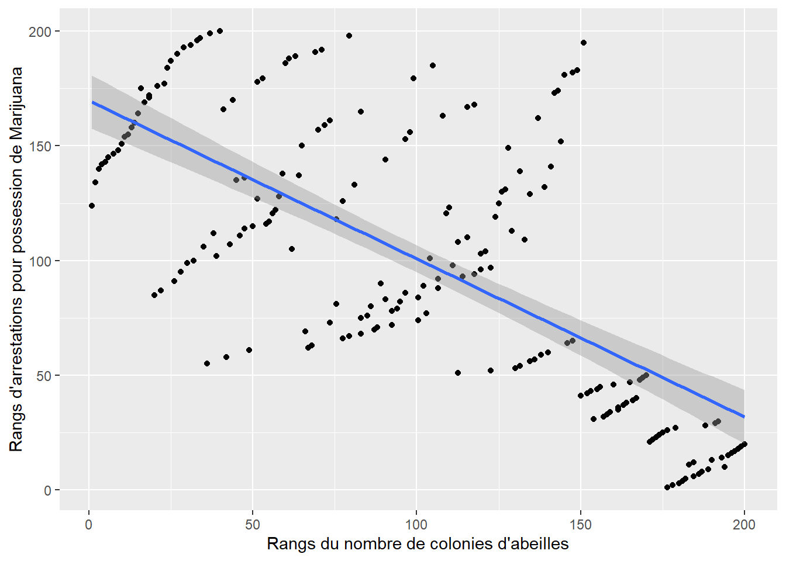
Figure 6. Représentation graphique de la \(\rho\) de Spearman où on transforme les données au rang au préalable
Si, dans cet exemple, il est assez aisé d’avoir une bonne représentation du lien qui existe entre les deux variables, il arrive parfois que ce ne soit pas le cas. Pour l’illustrer, nous utiliserons comme base de données le bfi (big five inventory). Il s’agit d’un questionnaire de personnalité où les individus qui y répondent doivent répondre sur une échelle de 1 à 5 s’ils sont d’accord ou non avec une assertion. Ce questionnaire est composé de 5 facettes : l’agréabilité (A), l’extraversion (E), conscienciosité (C), névrovisme (N) et ouverture (O). On veut savoir s’il existe un lien entre la première (A1) et la seconde question (A2) sur la facette agréabilité. Le jeu de données ‘bfi’ est disponible dans le package ‘psych’.
## Call:corr.test(x = bfi$A1, y = bfi$A2, method = "spearman")
## Correlation matrix
## [1] -0.37
## Sample Size
## [1] 2757
## These are the unadjusted probability values.
## The probability values adjusted for multiple tests are in the p.adj object.
## [1] 0
##
## To see confidence intervals of the correlations, print with the short=FALSE optionLa corrélation de Spearman indique une corrélation de -0.37, qui est significative. Néanmoins, quand on analyse la Figure 7, sans la droite de régression, il serait impossible d’identifier comment il est possible qu’il y ait une corrélation puisque la répartition des points semble indiquer une corrélation totalement plate.
## Dans cet exemple, il n'est pas nécessaire de transformer les données en rang car les variables sont déjà ordinales
p<-ggplot(bfi, aes(x=A1, y=A2) ) +
geom_point()
## On ajoute les points
p<-p+ geom_smooth(method=lm)
## On ajoute la droite de régression avec l'intervalle de confiance
p<-p+xlab("A1") + ylab("A2")Figure 7. Représentation graphique du \(\rho\) de Spearman entre A1 et A2.
La raison de cette situation est qu’il y a plusieurs observations sur chaque intersection et que les points ont tous la même taille, sans prendre en compte le nombre d’observations pour chaque combinaison 2 à 2. Pour changer la taille des points, il faut ajouter une nouvelle variable à nos données qui indiquent le nombre de fois que la combinaison que chaque combinaison de réponses 2 à 2 ont été choisies. Pour cela, il faut utiliser la fonction ftable qui permet de faire des tables à plusieurs dimensions, tout en permettant de spécifier quelles variables sont en lignes et quelles variables sont en colonnes. Ainsi, dans le Tableau 11, on peut voir que 11 personnes ont coché 1 sur la variable A1 et 1 sur la variable A2, qu’il y a 8 personnes qui ont coché 2 sur la variable A1 et 1 sur la variable A1.
tab<-ftable(bfi[,c("A1", "A2")], row.vars=c("A1", "A2")) ## Cette fonction permet de créer une table avec les deux variales en ligne
tab<-data.frame(tab) ## La table n'est pas directement utilisable, il faut utiliser la fonction data.frame pour combiner deux jeux de données
## cependant, on ne peut pas encore combiner les jeux de données car la nature de A1 et de A2 est un facteur dans 'tab'
## et un entier dans 'bfi'. Il faut donc donner la même nature aux deux variables.
tab$A1<-as.integer(tab$A1) ## transforme A1 en entier
tab$A2<-as.integer(tab$A2) ## transforme A2 en entier
datatable(tab, caption="Tableau 11. Nombre d'observations pour les combinaisons 2 à 2 des modalités de A1 et A2.")En l’occurrence, nous voulons que toutes les modalités des deux variables soient en ligne. On utilisera donc l’argument row.vars. L’étape suivante consistera à ajouter la fréquence pour chaque combinaison 2 à 2. Cela est possible grâce à la fonction <code<join du package ‘dpyr’.
library(dplyr)
bfi<-inner_join(bfi, tab)Il ne reste plus qu’à pondérer la taille des points par la variable ‘Freq’ qui a été ajouté à ‘bfi’. Cette pondération est possible en ajoutant un esthétique size au geom_point.
La Figure 8 permet à présent d’identifier le lien entre les deux variables grâce à la pondération qu’on peut avoir par le nombre d’observations pour chaque combinaison 2 à 2.
p<-ggplot(bfi, aes(x=A1, y=A2) ) +
geom_point(aes(size=Freq)) ## ajoute les points
p<-p+ geom_smooth(method=lm) ## ajoute la droite de régression avec l'intervalle de confiance
p<-p+xlab("A1") + ylab("A2")
ggplotly(p)Figure 8. Représentation graphique du \(\rho\) de Spearman entre A1 et A2 en prenant en compte la fréquence d’association de la combinaison des modalités 2 à 2.
Attention : la transformation de A1 et de A2 en entier peut se faire en une étape car il n’y a pas de nombre avec une virgule, ni de nombre supérieur ou égal à 10. Dans le cas où une de ces deux conditions ne sont pas respectées, il faut passer par une étape intermédiaire : transformez la variable en caractère au préalable avec la fonction as.character.
14.15 Réaliser l’analyse avec R
La dernière approche qu’on peut utiliser est utiliser l’approche bayesienne. Le package ‘BayesFactor’ permet d’obtenir le facteur bayesien soit avec la fonction correlationBF, qui permet de calculer le facteur bayesien pour une corrélation de Bravais-Pearson. Son mode de fonctionnement est proche de la fonction corr.test : on doit préciser les deux variables sur lesquelles il faut réaliser l’analyse. Contrairement à la fonction corr.test, il n’y a pas d’argument method. En revanche, il y a un argument rscale. Il s’agit du prior, qui est un argument indispensable pour le calcul des facteurs bayesiens.
Dans la manière de conceptualiser le prior dans le package ‘BayesFactor’, on peut l’assimiler à la taille d’effet qu’on s’attend à avoir. On peut le préciser sous la forme de nombre ou d’un étiquette. Les étiquettes sont “medium.narrow”, “medium”, “wide” et “ultrawide”. Ces étiquettes correspondent respectivement à \(\frac{1}{\sqrt{27}}\), \(\frac{1}{3}\), \(\frac{1}{\sqrt{3}}\) et 1. Dans notre exemple, on ne s’attend pas à avoir une corrélation forte entre les colonies d’abeilles et le nombre d’arrestations pour possession de marijuana. Il n’y a aucune étude qui permet de suggérer un fort lien. Donc, on peut choisir comme prior soit une valeur à “medium.narrow” ou “medium”. Pour notre illustration, nous choisirons “medium”.
Il faut également comprendre que le prior s’applique de manière bilatérale : est-ce que la valeur de la corrélation s’éloigne d’une valeur de 0.33 au minium d’une corrélation nulle.
library(BayesFactor)
bf<-correlationBF(y=miel3$Arrestations,
x=miel3$Miel, rscale = "medium")
bf## Bayes factor analysis
## --------------
## [1] Alt., r=0.333 : 1.016729e+73 ±0%
##
## Against denominator:
## Null, rho = 0
## ---
## Bayes factor type: BFcorrelation, Jeffreys-beta*Dans ce cas, la corrélation attendue est de 0.33. Il y a un facteur bayesien (FB) de \(10^{73}\) que la valeur de la corrélation soit de 0.33 plutôt que 0. Cela signifie donc que l’hypothèse alternative est \(10^{73}\) plus probable que l’hypothèse nulle.
Une seconde manière d’obtenir ces résultats aurait été d’utiliser la fonction regressionBF, puisque, comme nous l’avons vu, la corrélation et la régression sont intimemement liées.
BF<-regressionBF(Arrestations~Miel , data=miel3, rscaleCont="medium" )
BF## Bayes factor analysis
## --------------
## [1] Miel : 1.11011e+74 ±0.01%
##
## Against denominator:
## Intercept only
## ---
## Bayes factor type: BFlinearModel, JZSOn obtient donc les mêmes résultats, nonobstant le fait que dans la régression, il y a la constante qui est dans le modèle, ce qui n’est pas le cas pour la corrélation.
Si on avait voulu le \(\rho\) de Spearman, il aurait suffit de transformer les données en rang au préalable comme nous l’avons fait pour le graphique du \(\rho\) de Spearman. Cela aurait donné :
bf<-correlationBF(y=miel3$Arrestations_r,
x=miel3$Miel_r, rscale = "medium")
bf## Bayes factor analysis
## --------------
## [1] Alt., r=0.333 : 1.444974e+26 ±0%
##
## Against denominator:
## Null, rho = 0
## ---
## Bayes factor type: BFcorrelation, Jeffreys-beta*Remarquez que le facteur bayesien est moins grand que pour la corrélation de Bravais-Pearson, ce qui est cohérent avec le fait que la corrélation de Bravais-Pearson est à -0.93 alors qu’elle était de -0.69 pour le \(\rho\) de Spearman.
Supposons un amphi pour lequel on se demande si la parité est respectée. Dans cet amphi, il y a 200 personnes, dont 160 femmes. La probabilité que la parité soit respectée s’obtient par une binomiale
\[ \begin{pmatrix} 200 \\160 \end{pmatrix} 0,5 ^{160} (1-0,5)^{40}\ \]
et vaut
p.h0<-dbinom(160, 200, 0.5,FALSE)
p.h0## [1] 1.275816e-18L’hypothèse alternative à cette hypothèse est que la parité n’est pas respectée. La probabilité que la parité ne soit pas respectée (le ratio h/f est n’importe quelle autre valeur que 0,5) s’obtient par :
\[\int_{0}^{1} \begin{pmatrix} 200 \\160 \end{pmatrix} p ^{160} (1-p)^{40}\, \mathrm{d}p \]
Note : pour être parfaitement précis, il faudrait retirer de l’intégrale la probabilité d’avoir 0.5)
et vaut :
fdbinom<-function(p=NULL){
r<-dbinom(160, 200, p,FALSE)
return(r)
}
p.h1<-integrate(fdbinom, 0,1)
p.h1$value## [1] 0.004975124Selon les tests d’hypothèse nulle, on est amené à rejeter à la fois l’hypothèse de la parité et l’hypothèse selon laquelle la parité n’est pas respectée.
Le facteur bayesien peut résoudre ce problème. En effet, il s’agit du rapport entre ces deux probabilités.
## 1.275816e-18 / 0.004975124 = 3.899561e+15Ainsi, on sait quel est l’hypothèse la plus probable.
Un facteur bayesien s’interprète de la manière indiquée dans le Tableau 12. Notez que ce tableau teste l’hypothèse nulle. Les critères doivent être inversés si on teste l’hypothèse alternative.
Tableau 12. Seuil pour interpréter les facteurs bayesiens (Wagenmakers et al., 2011)
Cette approche permet donc de résoudre le problème des tests d’hypothèse nulle consistant à pouvoir tester une absence de différence.
Pour le comprendre, prenons deux groupes de 1000 personnes ayant exactement la même moyenne (i.e., 0) et le même écart-type (i.e.,1).
Pour comparer ces deux groupes, on va classiquement réaliser un t de Student pour échantillons indépendants.
Nous allons à présent pouvoir comparer l’évolution de la décision lorsque la taille d’échantillon augmente par rapport tant lorsqu’on adopte un test d’hypothèse que lorsqu’on utilise les facteurs bayesiens.
Commençons pour regarder l’évolution de la probabilité, qui est présentée en Figure 11. On se rend compte que peu importe la taille de l’échantillon, la probabilité associée au test de Student peut se situer entre n’importe quelle valeur sur une échelle allant de 0 à 1, avec un certain nombre de valeurs inférieures au seuil de significativité à 0.05, identifié par la droite horizontale. Ceci amène donc à la conclusion que peu importe la probabilité, nous ne sommes pas en mesure de tirer une conclusion.
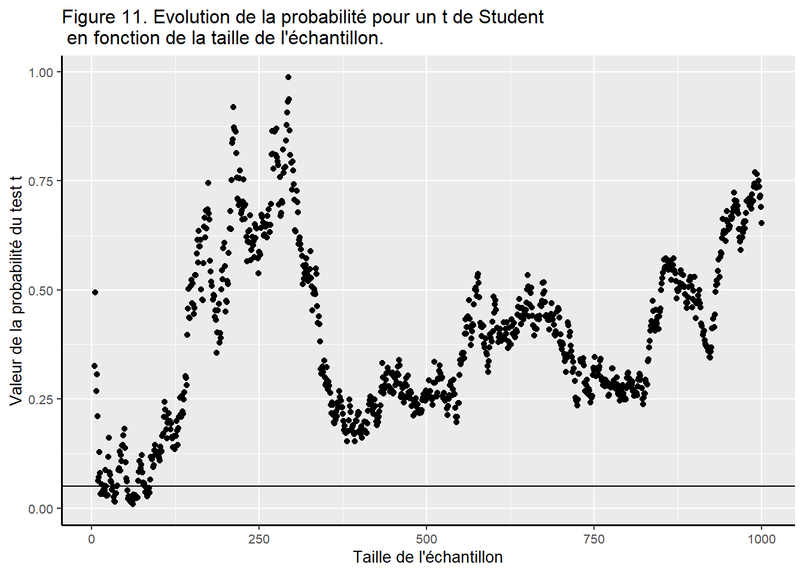
Si on s’intéresse à présent à l’évolution du Facteur Bayes (Figure 12). On constate que le FB ne dépasse jamais le seuil de 3 (ligne horizontale du haut) qui indique la présence d’une différence significative entre les deux groupes. En revanche, à partir d’un échantillon suffisamment élevé, le FB ne dépasse plus le seuil de 0.33 (la ligne horizontale du bas) qui indique des éléments en faveur de l’absence de différence. Il s’agit donc d’une grosse plus-value des facteurs bayesiens.
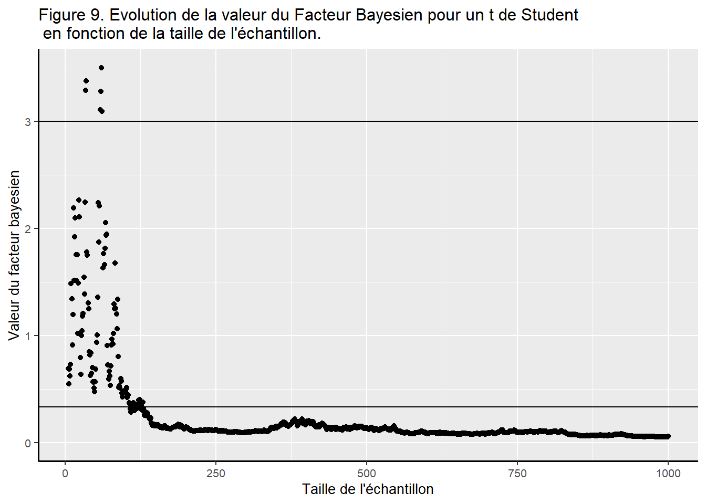
Pour utiliser les facteurs bayesiens, on applique le même raisonnement que pour les tests d’hypothèse nulle : donc si vous devez un t de Student, vous ferez un t de Student avec une approche bayesienne aussi.
Le package R qui permet d’adopter cette approche est le package ‘BayesFactor’ (il en existe d’autres, mais ils sont un peu plus complexes d’utilisation).
Nous pouvons reprendre notre exemple sur la force des super-héros pour illustrer la manière dont la fonction doit être utilisée.
bf<-ttestBF(formula=Force~Groupe, data=super, rscale = "medium", paired=F)
bf## Bayes factor analysis
## --------------
## [1] Alt., r=0.707 : 0.3628706 ±0%
##
## Against denominator:
## Null, mu1-mu2 = 0
## ---
## Bayes factor type: BFindepSample, JZSVous avez peut-être identifié que, par rapport à la fonction du test de Student classique, il y a un argument supplémentaire, qui est le rscale.
Le r-scale correspond à la taille d’effet en valeur absolue que le chercheur estime pouvoir observer dans plus de 50% des situations. La valeur par défaut (“medium”) pour le test t est de 0.707. En d’autres termes, dans les facteurs bayesiens, il faut explicitement préciser la taille d’effet. C’est ce qu’on appelle le prior. Pour les utilisateurs des tests d’hypothèse nulle, il est raisonnable d’utiliser comme prior la valeur du d de Cohen qu’on s’attend à observer (Lakens, 2018).
Une autre différence par rapport aux tests d’hypothèse nulle classique est que la distribution qui est utilisée est une distribution Cauchy plutôt qu’une distribution normale. Cependant, comme le montre la Figure 12, la différence entre les deux distribution est suffisamment subtile pour ne pas devoir s’en soucier. En effet, il n’est pas moins ou plus raisonnable de faire l’hypothèse d’une distribution normale et d’une distribution Cauchy pour a distribution des données.
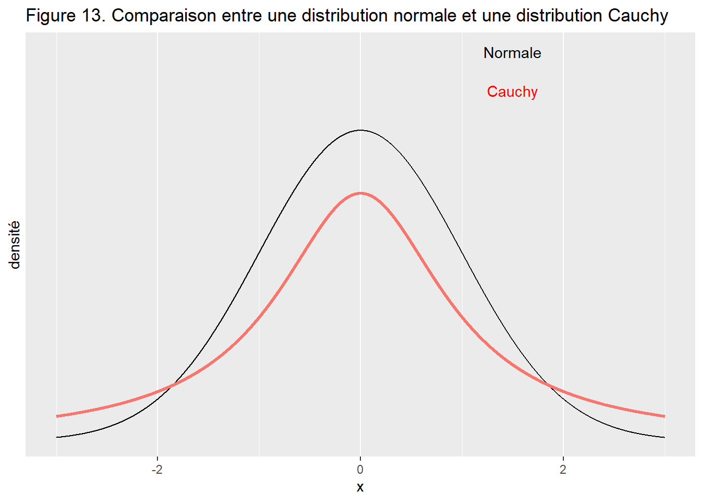